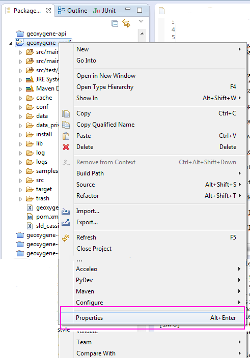
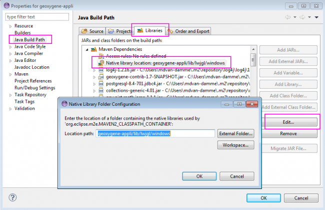
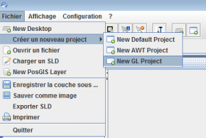
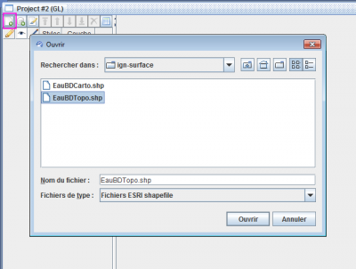
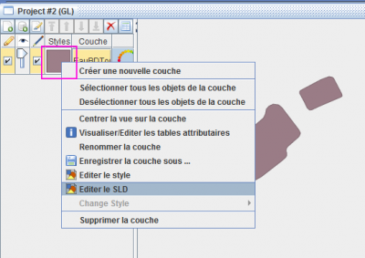
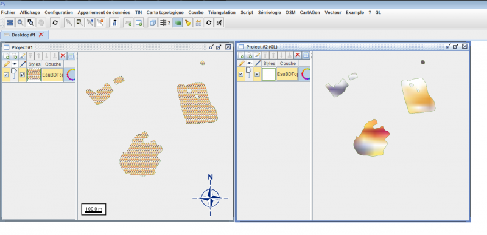

Configuration des librairies OpenGL
L’interface graphique 2D de GeOxygene est doté de 2 modes de rendu : AWT et OpenGL. Le rendu graphique OpenGL nécessite une configuration spécifique dans Eclipse : l’appel aux librairies natives (Lightweight Java Game Library, version 2.9.1).
Configuration & Installation
Il n’y a rien à installer, les librairies natives sont déjà téléchargées, elles sont placées dans le répertoire du projet geoxygene-appli/lib
Pour configurer Eclipse :
Dans l’explorateur, faire un clic droit sur le projet geoxygene-appli, puis choisir properties
Figure 1 : Configurer les librairies natives
Sélectionner Java Build Path
Dans le 3ème onglet libraries, dépacketer Maven Dependencies
Sélectionner Native library location
Cliquer sur Edit
Cliquer sur Workspace
Sélectionner les librairies suivant votre système d’exploitation, par exemple :
geoxygene-appli/lib/lwjgl/windows
Cliquer sur OK, c’est tout bon, les librairies natives sont configurées.
Figure 2 : Configurer les librairies natives
{kind=link}
{kind=link}
Si l’erreur suivante se présente, c’est qu’Eclipse n’a pas réussi à charger les librairies natives lwjgl :
Exception in thread "AWT-EventQueue-0" java.lang.UnsatisfiedLinkError: no lwjgl in java.library.path
at java.lang.ClassLoader.loadLibrary(ClassLoader.java:1886)
at java.lang.Runtime.loadLibrary0(Runtime.java:849)
at java.lang.System.loadLibrary(System.java:1088)
at org.lwjgl.Sys$1.run(Sys.java:73)
at java.security.AccessController.doPrivileged(Native Method)
...
Tester l’interface
Ouvrir un nouveau projet GL :
Figure 3 : Ouvrir un projet OG
Importer un shapefile, par exemple une toute petite collection de polygone :
geoxygene-matching/data/ign-surface/EauBDTopo.shp
Figure 4 : Ouvrir un shapefile
Modifier le style
... <PolygonSymbolizer uom="http://www.opengeospatial.org/se/units/metre"> <Stroke> <CssParameter name="stroke">#347302</CssParameter> <CssParameter name="stroke-opacity">0.8</CssParameter> <CssParameter name="stroke-width">1.0</CssParameter> </Stroke> <GeometryPropertyName>geom</GeometryPropertyName> <Fill> <BasicTexture xRepeat="false" yRepeat="false"> <Displacement x="0.0" y="0.0"/> <ScaleFactor x="0.0" y="0.0"/> <Rotation angle="0.0"/> <url>file:///D:/IMG/bert.gif</url> </BasicTexture> <CssParameter name="fill">#dcdb72</CssParameter> <CssParameter name="fill-opacity">0.8</CssParameter> </Fill> </PolygonSymbolizer> ...
Click droit sur la couleur du style
Figure 5 : Modifier le style
Et vous obtenez :
Figure 6 : Test OpenGL dans l’interface graphique 2D (à gauche AWT, à droite OpenGL)
{kind=link}
{kind=link}
{kind=link}
{kind=link}